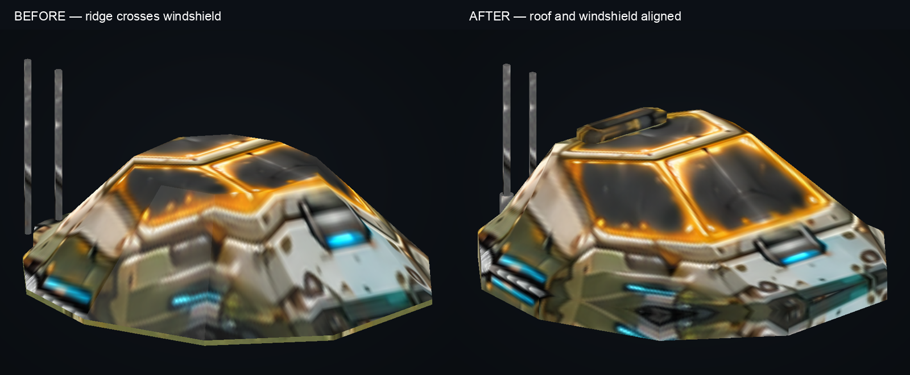
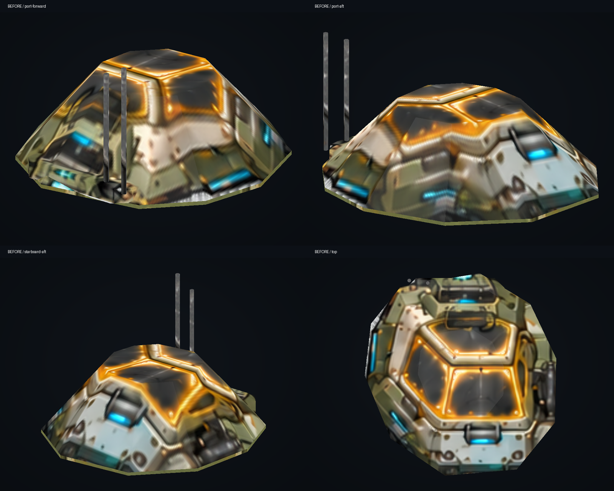
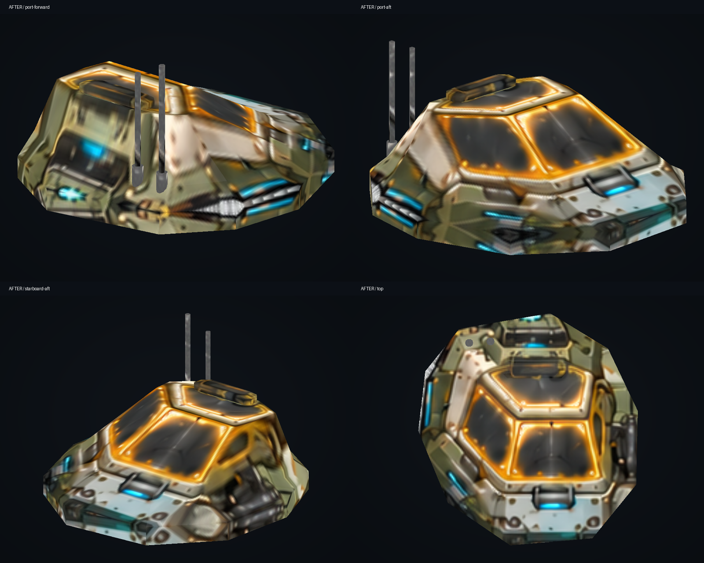

Second Wind’s command module
The previous canopy used a centered inset, putting its roof across the windscreen artwork. The cabin now has independently traced roof and sill boundaries. The windscreen occupies one sloping plane, the upper pane sits on the roof, and the console and antennas have seated mounts.
Open corrected 3D model ↗ · Download GLB · Exported-window checks

These close-ups render the exported model and its embedded texture with lighting disabled. Samples across the windscreen now lie on one plane; roof samples share one height. Reference-pixel registration is preserved. All non-bridge geometry, normals and UVs match the preceding export exactly.
Before · four angles

After · four angles

Before measurements · Preserved previous GLB · Full fleet audit